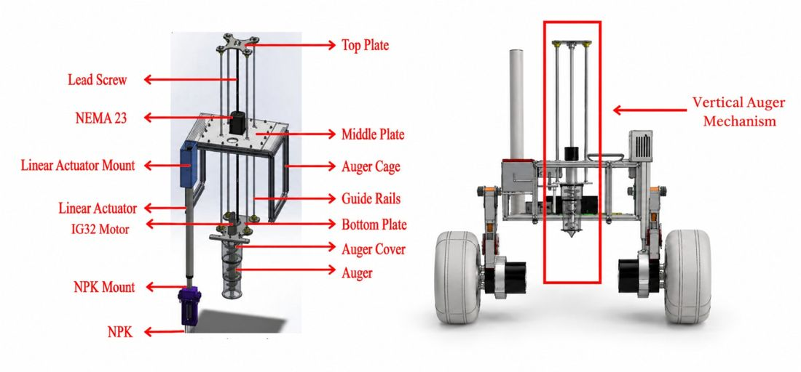

01Results
02The engineering problem
A rover is only as good as the task it can complete. ABEx turns a science requirement into a mechanical chain: get through the surface, extract soil without losing it, move it to where it can be tested, run chemical and sensor measurements, and report the result, all under competition time limits on unprepared ground.
The mechanism had to do more than move. It needed guided vertical motion, alignment, actuation, compact packaging and clean integration with the rest of the rover, and it had to work reliably in the field.
03Functional architecture
04Design & implementation

The subsystem combines a guided vertical sampling axis with an auger for extraction, a sample-handling path, a reagent-delivery stage for chemical tests, and sensor interfaces for on-board measurement.
Components were designed in SolidWorks, checked with FEA, and made by 3D printing and CNC machining.
05My contribution
What I did
- Designed the complete ABEx soil-collection and testing subsystem for Alaknanda
- Fabricated it (3D printing, CNC machining)
- Validated components with SolidWorks and FEA
- Integrated soil extraction, sample handling, chemical testing and sensor interfaces
Carried forward
- On Ganga (IRC 2026) I oversaw the ABEx subsystem as Team Captain
- Named inventor on the resulting patent application
- First author of the IPRoMM 2026 paper (under review)
06Testing & results

At IRC 2025, Alaknanda's ABEx run earned the highest ABEx points of the competition, and the judges recognised it as the best-designed soil-testing system. On Ganga at IRC 2026, the subsystem reached 150 mm of penetration and recovered a 12 g sample.
07Patent & publication
- Patent application (published, 2025): An Apparatus, System and Method for Robotic Soil Analysis and Collection. Application No. 202511062827. Named inventor. This is a published application, not a granted patent.
- IPRoMM 2026 (under review): Design and Development of a Multi-Axis Robotic Subsystem for In-Situ Soil Sampling and Analysis.